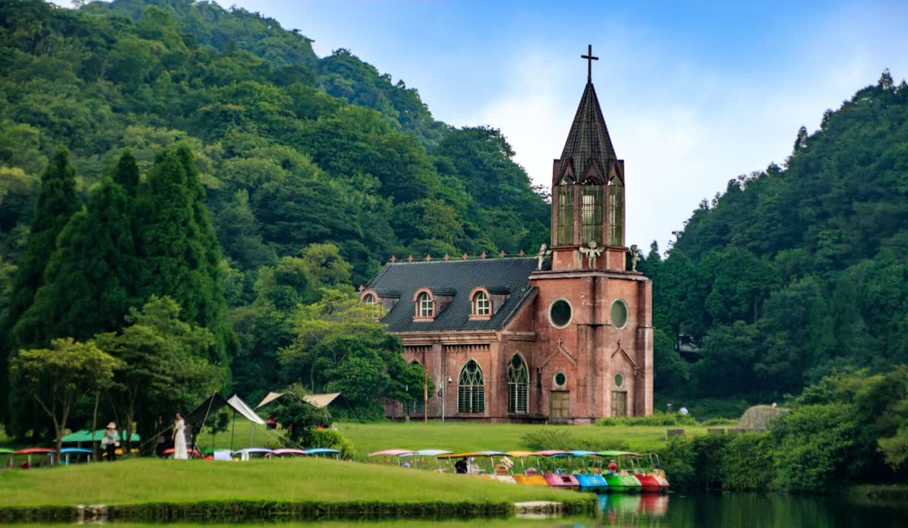
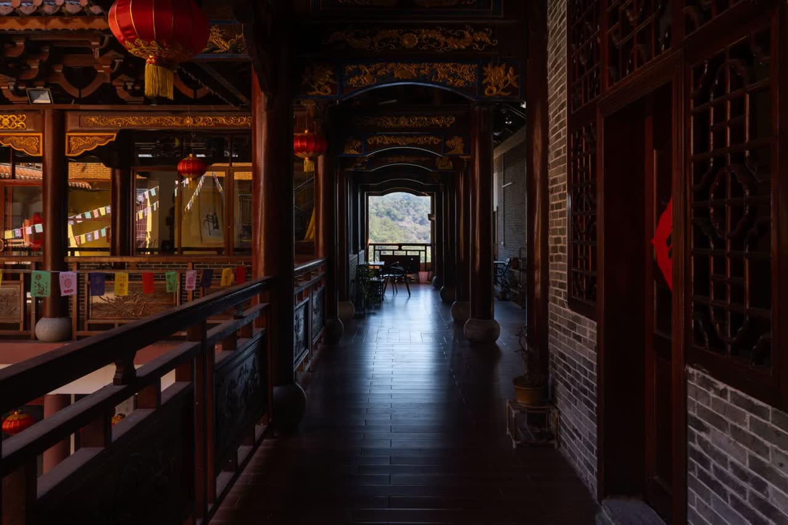
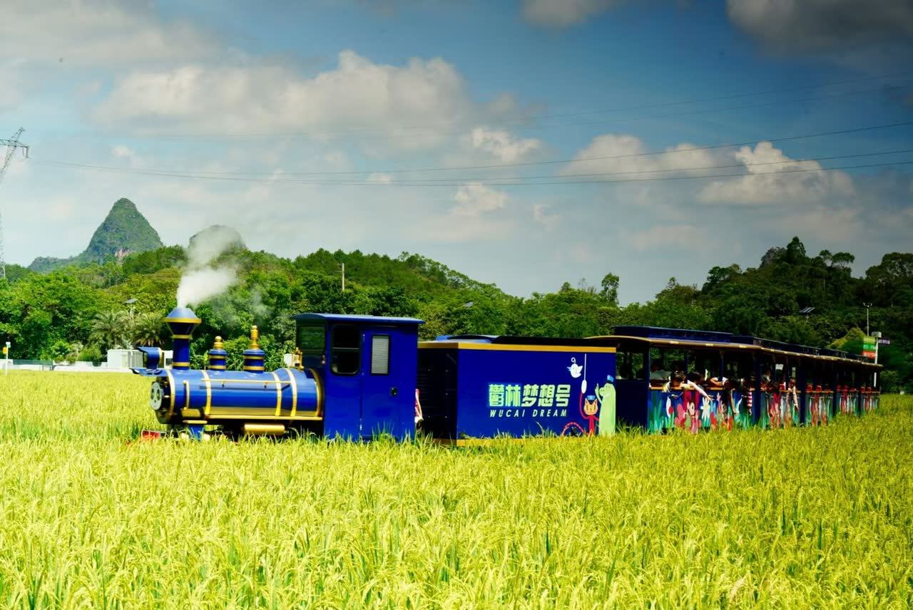
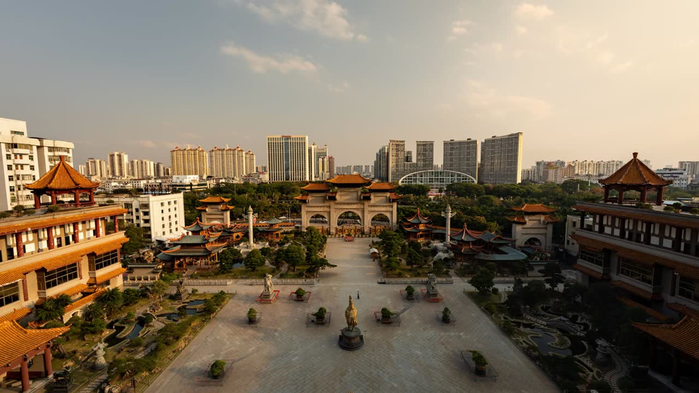

点击看大图大容山
DARONGSHAN NATIONAL FOREST PARK主峰梅花顶海拔逾千米，林海、草甸与风车云海连绵不绝。把帐篷搭在山脊之上，夜里抬头就是星河，是桂东南最负盛名的避暑露营地。
- 主峰梅花顶，海拔约 1275 米
- 看点原始次生林、高山草甸、风车阵、飞瀑
- 玩法露营、观星、徒步、避暑
桂东南的山不高，却有连绵的绿；水不深，却绕着城。四张风景，四种走进玉林的方式。

点击看大图主峰梅花顶海拔逾千米，林海、草甸与风车云海连绵不绝。把帐篷搭在山脊之上，夜里抬头就是星河，是桂东南最负盛名的避暑露营地。

点击看大图丹霞赤壁如燃，云雾绕崖而行。山中数百岩洞与历代摩崖石刻，佛、道、儒遗迹共处一山，被称为藏在岭南的“人间仙境”。

点击看大图稻田成画、花海绵延，水街在黄昏里亮起灯笼。现代农业与乡村风景在此交汇，四时有不同的颜色，是城市边上最松弛的去处。

点击看大图不知天上宫阙，今夕是何年。重檐层叠而上，木石铜雕极尽工巧，一座城写尽岭南匠人的心事，也是玉林最具辨识度的城市地标。